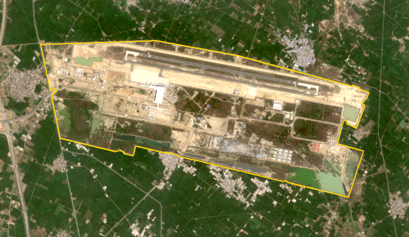
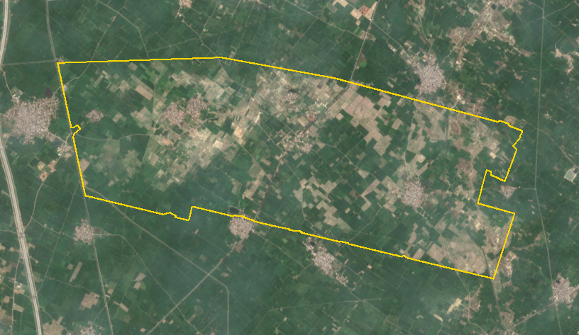

Mach-A-Thon Aeromania '26, Track A6: infrastructure monitoring
Jewar airport, checked from orbit
Lenders release money for big projects on the builder's word. We measured Noida International Airport at Jewar from free Sentinel-2 satellite images every month from 2020 to 2026, and checked the claims against what was on the ground.


In January 2025 the project was reported 80% complete. From orbit, 51% of the land had been converted.
Land conversion is not the same as finished construction, so the gap is a reason to inspect, not proof the report was false.reportedderived
Progress, month by month
The green line counts land that stayed free of vegetation all year, so the yearly crop cycle never counts as building. Larper's built-or-paved line is added when its run finishes. Grey bars are months too cloudy to measure.
Work shows from mid-2023, not from the 2021 groundbreaking. After 2025 the green line dips as grass grows back on finished, unpaved ground; that is the metric's limit, which Larper is built to fix.
Larper, our AI model derived
Larper is still training on this run. Its curve, accuracy and maps appear here when it finishes.
Nemotron checks Larper's work AI review
Nemotron reviews Larper's maps against the photos once both are ready. You can run a check live below.
Release the next payment, or inspect first?
An inspection costs money; trusting an optimistic report can cost far more. Move the sliders to see when the satellite evidence changes the decision.assumed costs
| Evidence | Chance optimistic | Expected cost if released | Expected cost if inspected | Do |
|---|---|---|---|---|
| No satellite evidence (prior) | 0.10 | $30,000 | $18,000 | Inspect |
| Satellite: 51% converted vs 80% reported (gap 29 pts) | 0.38 | $112,500 | $26,250 | Inspect |
| Counterfactual: satellite agrees with report | 0.03 | $9,000 | $15,900 | Release |
Inspect when the chance is above 0.056 (inspection cost ÷ (effectiveness × amount at risk)).
Where this goes next
- This airportLand conversion started Jun 2023 and levelled off Dec 2024; phase 1 opened 28 Mar 2026 (reported). It counts as a possible diversion airport only once an airline confirms slots and procedures.
- GPS trouble nearbyTrack C checks satellite evidence of GPS jamming or spoofing within 50 km. No data reads "unknown", never "safe". Monitoring only.
- PassengersWhen GPS failure diverts flights, NavContinuity uses that capacity to get each passenger to a confirmed rebooking, care and their bags.
Who pays: lenders, infrastructure funds and government monitoring cells, as a per-asset monitoring fee; airlines for the recovery product. Worth: inspections avoided plus losses caught. Pricing is not yet validated.
Ask about the results NVIDIA Nemotron
Answers use only the numbers on this page and keep their labels. AI text can be wrong; check it against the chart.